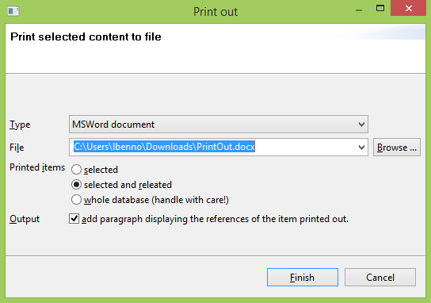
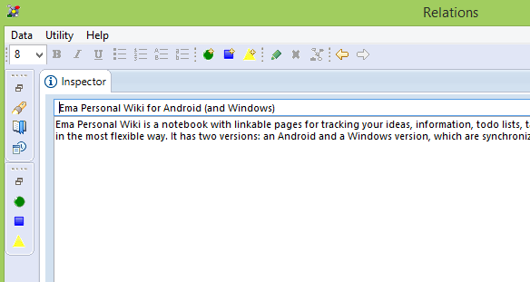

Print to Word (docx) |
Relations entries can now be printed into Word documents (in addition to text files and OpenOffice.org documents).  |
Fixed key binding issues |
This release fixes various key binding issues. For example, maximizing a view using Ctrl+M works now.  |